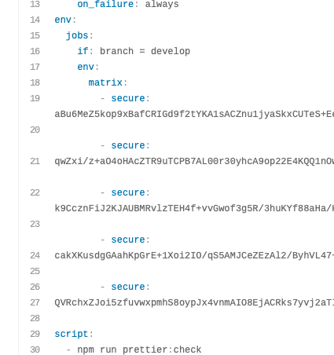

Số là một ngày đẹp trời, mạng ở VN quá chậm để kéo file lên Amazon S3. Kéo tầm 22.5MB lên, được tầm 30% là nó rớt. Và thế là phải cấu hình thêm CI/CD cho nhánh này.
Nói sơ một xíu, lúc trước mình đã cấu hình cho nhánh develop rồi
nhưng nhánh staging thỉnh thoảng mới deploy nên cho chạy bằng
cơm. Và thế là mình tìm hiểu xem có cách nào để 2 nhánh dùng chung tên biến
môi trường đã được mã hoá nhưng khác giá trị không?

Bạn chỉ cần vào Settings của repository trên Travis và làm như
hình.
Bạn kéo xuống phần Environment Variables, điền tên biến, giá trị
và chọn nhánh. Công việc hết sức dễ dàng.
Suy nghĩ xem có cách nào để cấu hình biến môi trường theo từng nhánh không?
Tức là biến NODE_ENV ở nhánh develop thì nó sẽ mang
giá trị là develop, còn ở nhánh staging thì giá
trị là uat. Với điều kiện là phải mã hoá biến được.
Sau một hồi tìm hiểu thì thấy viết kiểu này có vẻ chạy được, thử xem nào.
